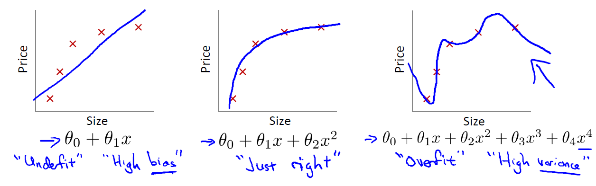
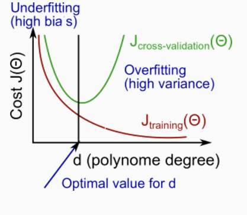
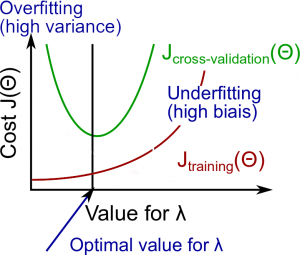
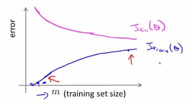
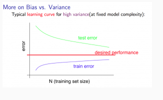
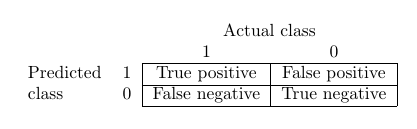
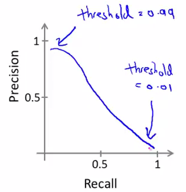

Andrew Ng's ML Week 06, 11
I actually finished the course on June 25th. In this page, I'll summarize various advices and tips given by Prof. Andrew Ng on how to build a effective machine learning system.
To be honest, I used to think this part of material may be not worth a post but as I dig deeper into the course I find out that this part is invaluable because it answers some commonly-seen questions when implementing a machine learning system, which can be a huge time-saver. So, I think I need a post to record those advices systematically.
Preface
One important question we may ask after implementing our machine learning algorithm is that: how good is our learning algorithm? In addition, for instance, after we have implemented regularized linear regression to predict housing prices and when we test our hypothesis on a new set of houses, we find that it makes unacceptably large errors in the predictions, what we should try next? This post aims to answer those questions.
In this post, I will first take a look at the diagnostic to evaluate learning algorithm. Then, I will define overfitting (high bias) and underfitting (high variance) concepts and the concrete techniques to identify which is which. Afterwards, I will talk about several ways to handle the problem and highlight some key points. Lastly, we will take a look at some special cases when data is skewed or large.
Diagnostics
Diagnostics is a test that you can run to gain insight what is or isn't working with a learning algorithm, and gain guidance as to how best to improve its performance. We use test set error as our basic metrics to evaulate our learning algorithm (hypothesis).
We first shuffle our whole data set to eliminate the potential impact of data record ordering. Then, we randomly choose \(70\%\) of data set as our training set and the rest \(30\%\) as our test set. Mathematically, we denote training set: \((x^{(1)}, y^{(1)}), (x^{(2)}, y^{(2)}), \dots, (x^{(m)}, y^{(m)})\) and we denote test set as \((x_{\text{test}}^{(1)}, y_{\text{test}}^{(1)}), (x_{\text{test}}^{(1)}, y_{\text{test}}^{(1)}) \dots (x_{\text{test}}^{(m_\text{test})}, y_{\text{test}}^{(m_\text{test})})\) with \(m_\text{test} = \text{no. of test examples}\).
-
For linear regression, our test set error is calculated by the following steps:
- Learn parameters \(\theta\) from training data (i.e. minimizing training error \(J(\theta)\))
- compute the test set error as follows:
$$ J_\text{test}(\theta) = \frac{1}{2m_\text{test}}\sum_{i=1}^{m_{test}}(h_\theta(x_{\text{test}}^{(i)})-y_\text{test}^{(i)})^2 $$ -
For logistic regression, we can use similar way like linear regression to calculate test set error but there is a way due to the nature of classification task. In this case, we also call test set error as misclassification error or (0/1 misclassification error):
This definition gives us a binary \(0\) or \(1\) error result based on a misclassification. Then, we calculate test set error as
This gives us the proportion of the test data that was misclassified.
In addition to the test set error, we will define cross validation set error as well. Instead of dividing the whole data set as training set and test set, we can divide it into three parts: training set, corss validation (cv) set, and test set, with proportion of data set as \(60\%\), \(20\%\), and \(20\%\). Mathematically, similar to the notation of test set, we have \((x_{\text{cv}}^{(1)}, y_{\text{cv}}^{(1)}), (x_{\text{cv}}^{(1)}, y_{\text{cv}}^{(1)}) \dots (x_{\text{cv}}^{(m_\text{cv})}, y_{\text{cv}}^{(m_\text{cv})})\) with \(m_\text{cv} = \text{no. of cv examples}\). The purpose of dividing data set in this way will be clear in the next section.
Now, we summarize our metrics (training error, cross validation error, and test set error) as follows:
Overfitting vs. Underfitting
In week 01-03 post, we mention the term overfitting when we talk about regularization. Now, we explain it in details. Overfitting happens when we have too many features, the learning hypothesis may fit the training set very well (i.e. \(J(\theta)=\frac{1}{2m} \sum_{i=1}^m(\theta^T x^{(i)}-y(i))^2 \approx 0\)) but fail to generalize to new examples (i.e. predict prices on a new set of house). Take a look at the following three graphs

The first graph (leftmost) shows the result of fitting our training set with a hypothesis: \(h_\theta(x) = \theta_0 + \theta_1 x\). You can see that the data doesn't really lie on straight line, and so the fit is not very good. In this case, we call the scenario underfitting, which means the model doesn't capture the data structure well. Another term for this is high bias. One way to think of high bias is that the algorithm has strong preconception on what the data should be, in our case, linear. In summary, underfitting, or high bias, is when the form of our hypothesis function \(h\) maps poortly to the trend of the data. It is usually caused by a function that is too simple or uses too few features.
At the other extreme, shown by the rightmost graph, is overfitting, or high variance. High variance means that the function can almost fit any function: hypothesis \(h\) is too general and we don't have enough data to constrain it. The overfitting or high variance is usually caused by a complicated function that creates a lot of unnecessary curves and angles unrelated to the data.
There are a couple of ways to tackle the overfitting problem:
-
Reduce number of features
- Manually select which feature to keep
- Model selection algorithm
-
Regularization, which can keep all the features, but reduce magnitude/values of parameters \(\theta_j\). This way works well when we have a lot of features, each of which contributes a bit to predicting \(y\).
Model selection algorithm
Once parameters \(\theta_0, \theta_1, \dots\) were fit to some set of data (training set), the error of the parameters as measured on that data (i.e. \(J_\text{train}\theta\)) is likely to be lower than the actual generalization error. In other words, \(J_\text{train}\theta\) will be a bad metric on predicting how well our hypothesis will be generalized to new examples. So, how do we measure how well our hypothesis will perform on new examples? In addition, how to select which model to use? Ideally, we should pick the model that has the best performance on new examples. As you can tell, these two questions are equivalent and are all centered around the metrics we use for reporting our model generalization error.
We can start with the following schemes to pick our model. We use \(d\) to denote the degree of polynomial of our model. For example, \(d = 1\) means \(h_\theta(x) = \theta_0 + \theta_1 x\); \(d=2\) means \(h_\theta(x) = \theta_0 + \theta_1 x + \theta_2 x^2\). Then, we can do:
- Optimize the parameters in \(\Theta\) using the training set for each polynomial degree \(d\).
- Find the polynomial degree \(d\) with the least error \(J_\text{test}(\theta)\) using the test set. We pick the model with this \(d\) and report our test set error \(J_\text{test}(\theta)\) as the metric for estimate of generalization error.
However, there is a problem with this scheme: we use our extra parameter \(d\) to fit the test set. In other words, we choose \(d\), then we fit with \(J_\text{test}(\theta)\). Our estimate is likely optimistic and our model is likely do better on test set than on new examples hasn't seen before. This is similar to overfitting in training set.
In order to fix this problem, we introduce cross validation set. We modify above scheme as follows:
- Optimize the parameters in \(\Theta\) using the training set for each polynomial degree
- Find the polynomial degree \(d\) with the least error using the cross validation set
- Estimate the generalization error using the test set with \(J_\text{test}(\theta^{(d)})\) (\(\theta^{(d)}\) is the parameter \(\Theta\) from polynomial with the lowest error)
This way, our \(d\) has not been trained using the test set.
Diagnosing bias vs. variance: which is which?
Once we have the metrics and the understanding of cross validation set, we can now find out whether bias or variance is the problem contributing to bad predictions. We have the following picture to help us understand the relationship bewtween \(d\) and the underfitting (high bias) or overfitting (high variance) of our hypothesis

The training error will tend to decrease as we increase the degree \(d\) of polynomial because our hypothesis fitness to our training data becomes better and better. On the other hand, the cross validation error will tend to decrease as we increase \(d\) up to a point (because our model can generalize well), and then it will increase as \(d\) increased (because we now overfit the training data and cannot be generalize well in cross validation set), forming a convex curve. So now, based on the picture, we can answer the question: suppose the learning algorithm is performing less well than you were hoping (\(J_\text{cv}(\theta)\) or \(J_\text{test}(\theta)\) is high). is it a bias problem or a variance problem?
-
High bias (underfitting): \(J_\text{train}(\theta)\) will be high; \(J_\text{cv}(\theta) \approx J_\text{train}(\theta)\)
-
High variance (overfitting): \(J_\text{train}(\theta)\) will be low; \(J_\text{cv}(\theta) \gg J_\text{train}(\theta)\)
Regularization: how to choose \(\lambda\)?
In the overfitting section above, we know that regularization is another way to handle the overfitting. There is a problem with regularization method: how do we set \(\lambda\) appeard in the \(J_\theta(x)\)? In general, when \(\lambda\) is large, we tend to underfit (i.e. high bias) the data and when \(\lambda\) is small, we tend to overfit (i.e. high variance). In the course, the following method is proposed:
- Create a list of \(\lambda\) (i.e. \(\lambda = 0, 0.01, 0.02, 0.04, \dots, 10.24\) (multiple of 2))
- Create a set of models with different degrees or any other variants
- Iterate through \(\lambda\)s and for each \(\lambda\), go through all the models to learn some \(\theta\).
- Compute the cross validation error \(J_{cv}(\theta)\) without regularization term (i.e. \(\lambda = 0\)) using the learned \(\theta\).
- Select the best combo that produces the lowest error on the cross validation set
- Using the best combo \(\lambda\) and \(\theta\), apply it on \(J_{test}(\theta)\) to see if it has a good generalization.
We can also plot the Bias/Variance as a function of the regulariation parameter like below:

Learning curves
Learning curve is a tool to help us identfy whether we are facing underfitting (i.e. high bias) or overfitting (i.e. high variance) problem and at the same time, gives us a way to answer the question: Will getting more training data help us improve our learning algorithm performance?
The following picture shows what learning curves look like for a linear regression (i.e. \(h_\theta(x) = \theta_0 + \theta_1 x + \theta_2 x^2\)):

The x-axis of the learning curves is the training set size \(m\) and the y-axis is the error. When \(m\) is small, any hypothesis can fit the training data perfectly, and thus our \(J_{train}(\theta)\) is small. However, as \(m\) increases, our hypothesis cannot fit all the data, and thus \(J_{train}(\theta)\) increases. On the other hand, when \(m\) is small, our hypothesis cannot generalize much and thus \(J_{cv}(\theta)\) tends to be high. However, as \(m\) increases, the more data we have, the better hypothesis we can get and thus our hypothesis can generalize well to new examples and \(J_{cv}(\theta)\) decreases.
Experience underfitting
Now, let's see what learning curves look like when we face underfitting (i.e. high bias) problem. For example, we try to fit our data with hypothesis \(h_\theta(x) = \theta_0 + \theta_1x\). Now, when \(m\) is small, our \(J_{train}(\theta)\) will be small, and it will increase as \(m\) increases. After certain point, our \(J_{train}(\theta)\) will flat out because our hypothesis is a straight line and more data won't help much. On the other hand, \(J_{cv}(\theta)\) will be high when \(m\) small and will decrease as \(m\) increases. Similar to \(J_{train}(\theta)\), \(J_{cv}(\theta)\) will quickly flat out because number of hypothesis parameter is so small and it won't generalize well as data increases. In other words, when we have high bias, the performance of \(J_{cv}(\theta)\) and \(J_{train}(\theta)\) will look a lot similar. Thus, our learning curve looks something like this:

Note
- \(m\) is small: causes \(J_{train}(\theta)\) to be low and \(J_{cv}(\theta)\) to be high.
- \(m\) is large: causes both \(J_{train}(\theta)\) and \(J_{cv}(\theta)\) to be high with \(J_{train}(\theta) \approx J_{cv}(\theta)\)
From above graph we can get, if a learning algorithm is suffering from high bias, getting more training data will not (by itself) help much.
Experience overfitting
For overfitting (i.e. high variance) problem, let's consider a hypothesis: \(h_\theta(x) = \theta_0 + \theta_1x + \dots + \theta_{100}x^{100}\) (and small \(\lambda\)). When \(m\) is small, \(J_{train}(\theta)\) is small because we fit very small data size with very high degree polynomial. As \(m\) increases, \(J_{train}(\theta)\) increases but not so much because with high polynomial degree, even we cannot fit the data perfectly, our hypothesis is still pretty good with large data size. For \(J_{cv}(\theta)\), we have overfitting problem no matter the size of \(m\). Even \(m\) increases may help our hypothesis generalize better, our hypothesis can still do poorly for new examples. So, the learning curves for high variance problem looks like below:

Note
- \(m\) is small: \(J_{train}(\theta)\) will be low and \(J_{cv}(\theta)\) will be high.
- \(m\) is large: \(J_{train}(\theta)\) increases with training set size and \(J_{cv}(\theta)\) continues to decrease without levelling off. Also \(J_{train}(\theta) < J_{cv}(\theta)\) but the difference between them remains significant.
From above graph, if we keep getting more data, \(J_{cv}(\theta)\) will keep getting down and this indicates that if a learning algorithm is suffering from high variance, getting more training data is likely to help.
Note
In the learning curves, \(J_{cv}(\theta)\) can be substituted with \(J_{test}(\theta)\) and the shape still holds. All in all, we really care about the size of \(J_{cv}(\theta)\) (or \(J_{test}(\theta)\)).
What to try next?
Now, we can answer the question appeard in the perface section: suppose we have implemented regularized linear regression to predict housing prices. However, when we test our hypothesis in a new set of houses, we find that it makes unacceptablely large errors in its prediction. What we should try next?
| Method | When it works? |
|---|---|
| Get more training examples | high variance |
| Try smaller sets of features | high variance |
| Try getting additional features | high variance |
| Try adding polynomial features (i.e. \(x_1^{2}\), \(x_2^{2}\), \(x_1x_2\)) | high bias |
| Try decreasing \(\lambda\) | high bias |
| Try increasing \(\lambda\) | high variance |
This leads to model complexity effects:
- Lower-order polynomial (low model complexity) have high bias and low variance. The model fits poorly consistently.
- Higher-order polynomial (high model complexity) fits training data extremely well but test data poorly. Low bias but high variance on training data.
Ideally, we should choose a model somewhere in between.
Neural Network and overfitting
Underfitting and overfitting also exist in the neural network. When we use "small" neural network (i.e. less hidden layers, less hidden units), we have fewer parameters and more prone to underfitting. In the contrast, when we use "large" neural network, it's computationally more expensive and more parameters means more prone to overfitting. In this case, we use \(\lambda\) to address the issue.
We also face the similar model selection problem like we have when working with linear regression. In the neural network setting, that means deciding number of hidden layers we need to use in the network. Prof. Ng talks about the following method to solve the problem:
- We create a list of number of hidden layers
- For each number of hidden layers, we optimize the parameters in \(\Theta\) using the training set
- Find the number of hidden layers with the least error using the cross validation set
Usually, using a single hidden layer is a good starting default. We can then train our neural network on a number of hidden layers using our cross validation set. We can then choose the one that performs the best.
Error analysis
Error analysis means manually examine the examples (i.e. cross validation set) that your algorithm made errors on and see if you spot any systematic trend in what type of examples it is making errors on. Then, we need to try some method to see if it helps. The key point during the whole analysis is that we need to come up some numeric evaluation, which gives a single raw number, to determine how system works.
This leads to a recommended approach for handling machine learning problem:
- Start with a simple algorithm that you can implement quickly. Implement it and test it on your cross-validation set.
- Plot learning curves to decide if more data, more features, etc, are likely to help
- Perform error analysis
Ceiling analysis
Ceiling analysis is helpful when we work on a machine learning system, which contains many components. Then ceiling analysis tries to address the question: what part of the pipeline we need to focus on to improve next? This is done by estimating the errors due to each component. Suppose we have a image recognition system with four components:
Then, we try to decide which part of the pipeline we should spend the most time trying to improve.
| component | Accuracy of overall system |
|---|---|
| Overall system | 72% |
| Text detection | 89% |
| Character segmentation | 90% |
| Character recognition | 100% |
Before we improve some component of the system, we have a overall system accuracy of \(72\%\). Now, let's take text detection as an example. Let's manually label where the text is and this will give \(100\%\) accuracy of text detection. Then, we run the rest modules, and get an overall system accuracy, which in our case is \(89\%\). We perform the similar steps for each component. Then, we calculate the gain of system accuracy. For example, we will get \(17\%\) gain by working on text detection (i.e. \(89\% - 72\%\)) and \(1\%\) by working on character segmentation, and \(10\%\) by working on character recognition. As you can see, text detection will give us the largest gain, and thus we should work on this componet next.
Other issues
Machine learning is interesting because there probably doesn't exist a unified way to handle different kind of data. This means for some special data, we may need to have some special approach to handle them.
Error metrics for skewed classes: Precision & Recall
Skew classes
Consider the following example: we want to do a cancer classification using logistic regression with \(y=1\) indicating cancer and \(y=0\) otherwise. After training on the training data, we find that we got \(1\%\) error on test set (i.e. \(99\%\) correct diagnoses). Can we say that our learning algorithm is performing well? The answer is depends. We further examine the training data and find out that only \(0.5\%\) of patients have cancer. This causes problem to our training task because we can directly set \(y=0\) for every training data and we will get only \(0.5\%\) error, which is less than \(1%\) in our previous case. However, this error is useless. This is a typical scenario of skew classes, where the number of possitive examples \(\ll\) the number of negative examples.
Precision & Recall
Rather than using classification error as a measurement to our learning algorithm performance, we use precision and recall instead when we deal with skewed class.
- Let \(y = 1\) in presence of rare class that we want to detect
- \(\text{Precision} = \frac{\text{True positives}}{\text{# predicted positives}} = \frac{\text{True positive}}{\text{True positive}+\text{False positive}}\) (i.e. of all patients where we predicted \(y = 1\), what fraction actually have cancer?)
- \(\text{Recall} = \frac{\text{True positives}}{\text{# actual positives}} = \frac{\text{True positives}}{\text{True positives}+\text{False negatives}}\) (i.e. of all patients that actually have cancer, what fraction did we correctly detect as having cancer?)

Note
If we apply this concept to the previous scenario when we set \(y=0\) for each training data, then the recall will be \(0\).
There is a tradeoff between precision and recall. Suppose we have a logistic regression: \(0 \ge h_\theta(x) \le 1\) and we want to predict \(1\) if \(h_\theta(x) \ge \text{threshold}\) and \(0\) if \(h_\theta(x) \le \text{threshold}\). Then, how do we determine that threhold value?
- Suppose we want to predict \(y=1\) (i.e. cancer) only if very confident: Higher precision, lower recall (i.e. threhold = \(0.7\))
- Suppose we want to avoid missing too many cases of cancer (i.e. avoid false negatives): Higher recall, lower precision (i.e. threshold = \(0.3\))
As you can see, we cannot maintain high precision and high recall at the same time. This kind of tradeoff is dicpted in the picture below:

\(F_1\) score
Now, we may ask if there is a way to choose our threshold value automatically. That's where \(F_1\) score comes from. If we use \(P\) to denote the precision and \(R\) to denote recall, then our \(F_1\) score is defined as follows
- If \(P = 0\) or \(R = 0\), then \(F_1 \text{ score} = 0\)
- If \(P = 1\) and \(R = 1\), then \(F_1 \text{ score} = 1\)
Then, we can pick the threshold value by measuring \(P\) and \(R\) on the cross validation set and choose the value of threshold which maximizes our \(F_1 \text{ score}\).
Data for machine learning
When we should use a very large training set? Two things need to consider before we do that:
- Assume feature \(x \in R^{n+1}\) has sufficient information to predict \(y\) accurately. This can be tested by answering the question: given the input \(x\), can a human expert confidently predict \(y\)?
- Use a learning algorithm with many parameters (i.e. logistic regression or linear regression with many features; neural network with many hidden units), which can give us a low bias algorithm.